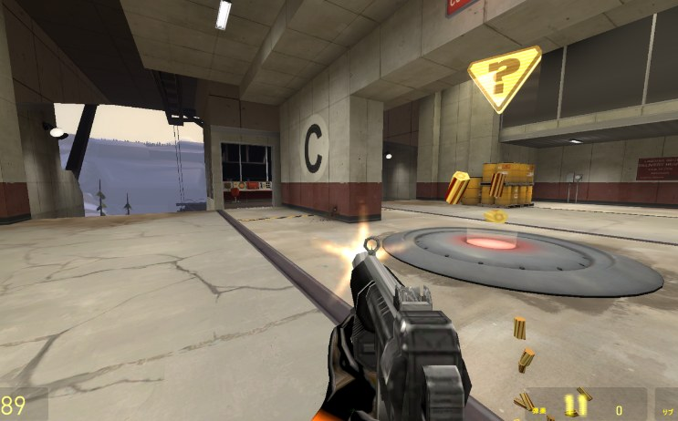
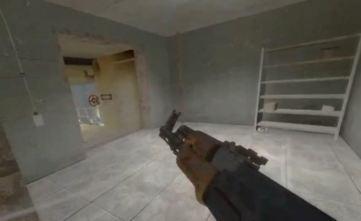

Into the Reality
Garry's Mod 用オールインワン写実化パック
Workshop で100いいね超 JPフォーラム管理人に任命
2006年のゲーム画面を、Unrecord や BodyCam のようなフォトリアル映像に寄せる。 ReShade の .fx を .hlsl に起こして ps20b.vcs へコンパイルし、CAS と Curved Levels の ポストプロセス、ノイズベースの手ブレと武器スウェイ、落下ダメージの現実化までを一体に。 Workshop 公開後、GShader Library の作者とコンタクトが生まれ、 シェーダーコミュニティの JP フォーラム管理人を任されました。
「人間の視覚処理は、我々が想像するほど厳密かつ正確なものではない」
GLuaHLSLSource EngineShader